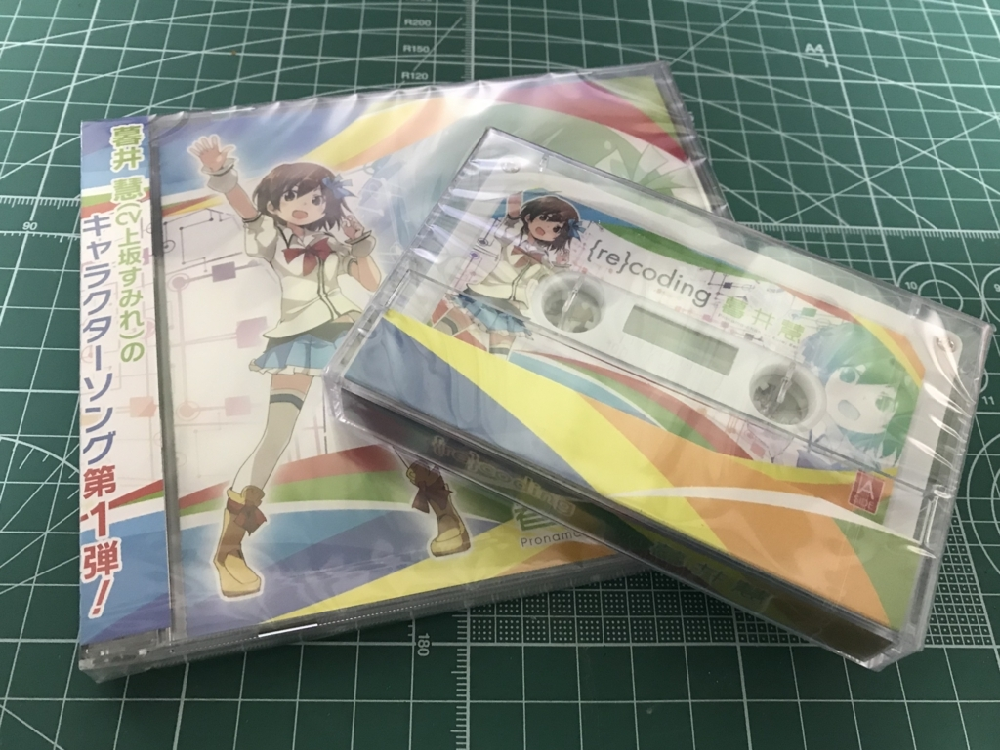
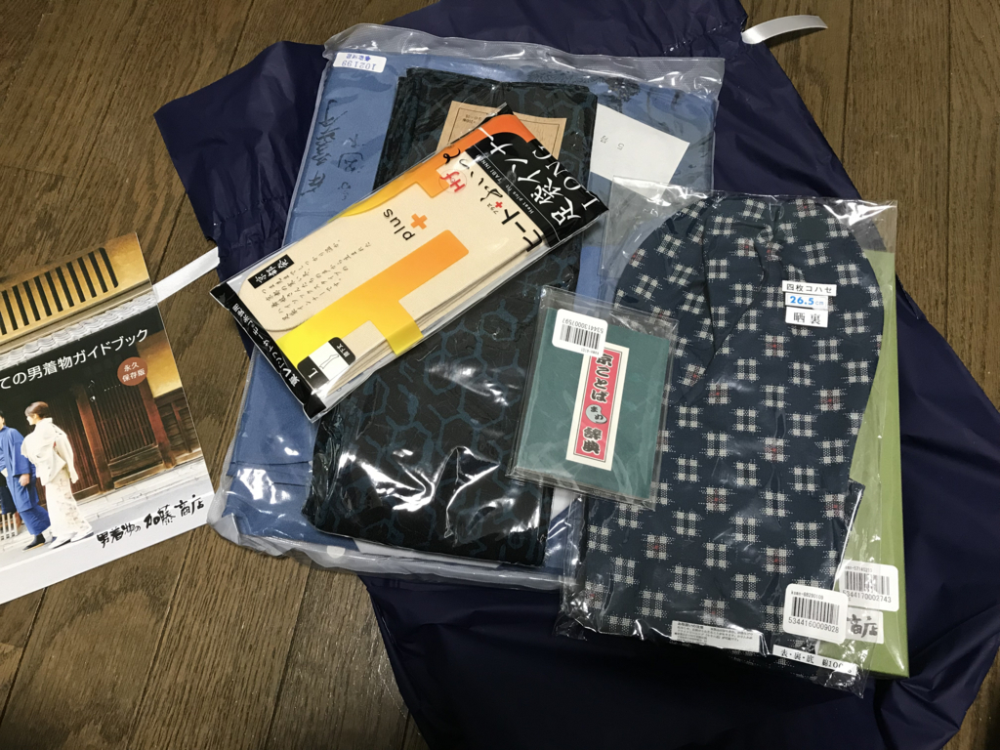
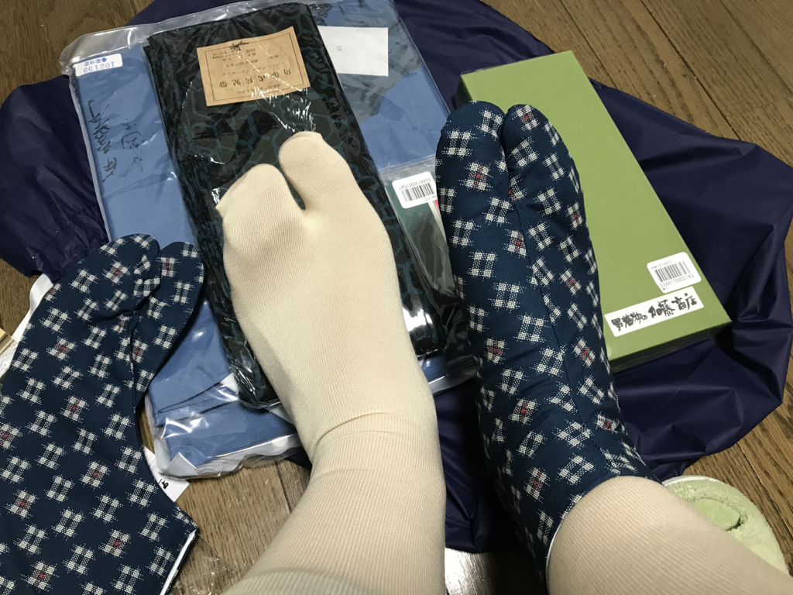
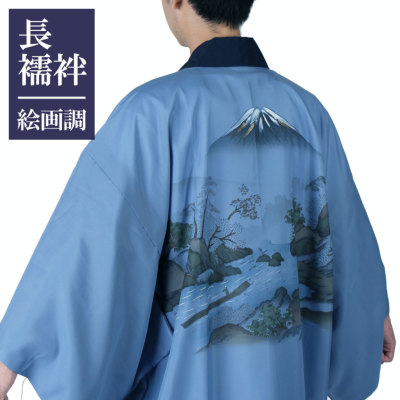
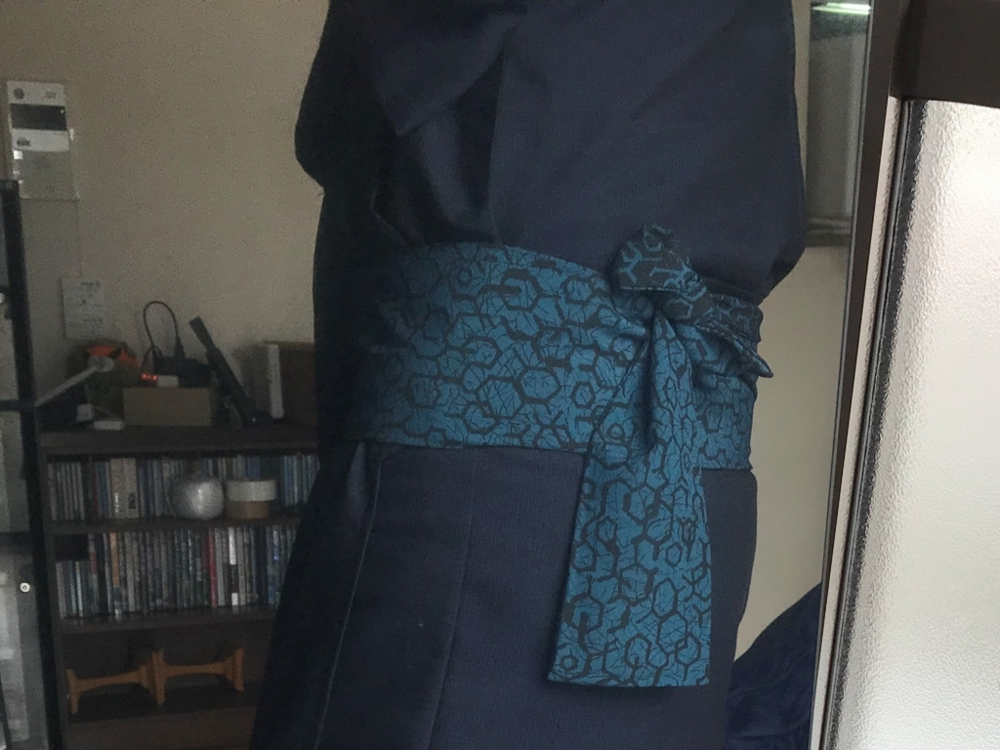
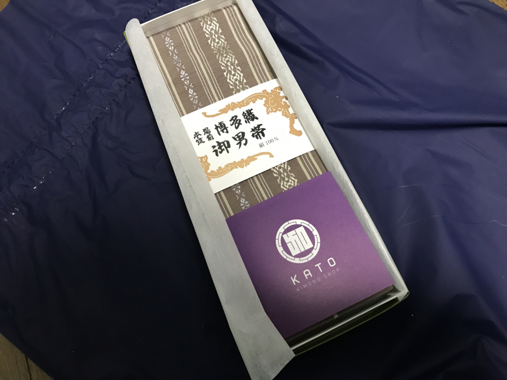
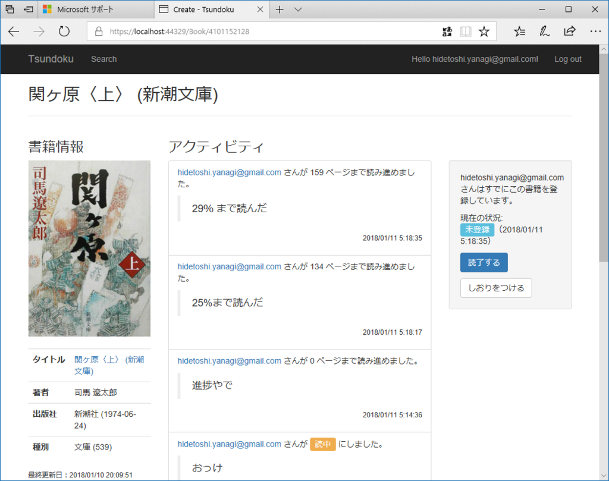

2018年1月11日の日記：プロ生ちゃん CD と着物屋さんの福袋
公開日：
山を越えたところでは雪が積もったらしいけれど、松山はただ風が冷たいだけで少し損をしたような気がする。1月も早、中旬に入ったが、今月は家賃と光熱費をやっと稼いだ程度（稼働日がまだ数日だから仕方ない）。もうちょっと頑張らないと、懐に分厚い氷が張りそう。
本日のだるやなぎ家は、宅配受け取りの日。

1品目は、かねてから予約していたプロ生ちゃん*1のキャラクターソング CD。さっそき聞いてみたかったのだけど、封を開けるのがもったいないな――とか思ってたんだけど、それは取り越し苦労だった。ポータブル BD ドライブを出張中の親父に貸してしまっているので、CD を再生できる環境がない！ 付属のおまけカセットが再生できないのは織り込み済みだったけど、まさか CD まで再生できんとはな。XBox にツッコめば音は聞けそうだけど、リッピングして iPhone に入れるところまではできんだろうし……だれか、MP3 にして俺におくれください。

2品目は、年末に注文した着物屋さんの福袋（1万円）。着物はじめたばかりなので小物を大して持っていない、かといって何買ったらいいかイマイチわからん……ので、ちょうどいいと思った。内容物はこんな感じ。

- 足袋：和装初心者にはちょっとハードル高めだけどそれなりにシックなデザイン。日頃履いている福助のヤツよりも薄手だから、冬が明けてたらいい感じの木綿の長着でも買って、それに合わせようかな？
- 冬用の足袋インナー：冬用の足袋はなかがモコモコのやつをもっているけれど、オールシーズン向けの足袋とインナーを組み合わせた方がいいかもしれない。かかとより上が少し長めで、肌色になっているのもいい。いつも履いてるユニクロ股引が長着の裾から見えるのはイマイチカッコ悪いと思っていたが、これなら股引を足首まで引っ張ってもその上にかぶせてしまえる。具合がよければリピートしたい

- 長襦袢：絵付きの長襦袢（写真とは絵柄は違うが）。こういうのは一着買おうと思っていたのでラッキー。Amazon で適当に買った長襦袢と同じポリエステル製だけど、若干着こごちはいい気がする。洗えるし、活躍不可避。

- 角帯式兵児帯：カタチは角帯なんだけど、コシがなく、やわやわ。普段使いはいつもの兵児帯の方がいいし、かといってピシッとした角帯でもないから、今の自分には使いにくい。太さがあるので、腹が出てる自分にはなかなかいいかもしれないが……そもそも、結びやすいと紙に書いていたけど、どうやって結べばいいのかわからん。ためしに方蝶々結びにしてみたけど……んー、イマイチやろうか？ もうすこしいろいろ結び方をマスターしたいと思った。今後の使いこなし次第だが、ポテンシャルはある。色はもうちょい派手でもよかったかも（← 自分で選んで買え）。

- 角帯：何本あってもいいけど、今持ってる着物には色が合わない気がするので、足袋と一緒に封印。今後の活躍に期待
- その他冊子類：ぺらぺら見ただけだけど、わしみたいな初心者にはナイスでありがたい情報がまとまってるのかもしれない（後で舐めるように読む
福袋はあんまり買わないからほかのものがどんなものかわからんのだけど*2、結構満足できるかなって思った。ほんとのところは羽織紐に期待してたんだけど、これはまた別に買おう。
ちなみに、着物の買い物はもっぱらオンライン（今回は加藤商店さんというところで買った）。でも、できたら地元の店ともお知り合いになりたい（あるのか？
今日はこれから近所の温泉にでも行って、軽く飲むつもり。開発は早朝にちょろっとやって、昨日実装したユーザーインターフェイスの裏を作った（つまりはデータの入出力部分。昨日のはハリボテだったのだ！）。

モデルクラスを書き足して、Add-Migration、Update-Database。コントローラーを少しいじって完成。だいぶ慣れてきて、10分とかからずに実装できた。たいしたことではないけれど、だいぶ嬉しい。
ToDo
あしたは鶏肉を揚げてしまわないと、足が速いから危険（← 飲みに行ってる場合じゃないけど、飲みに行きたいから仕方ない